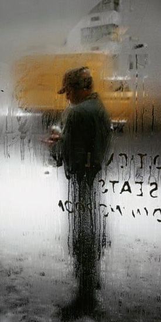
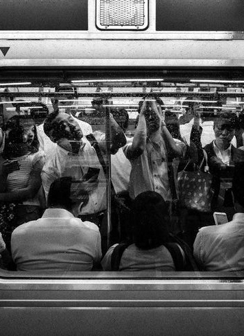

Gallery
A picture is a poem without words
Photography 10/09/23
Life cycle 10/09/23


Playlist
1. This mirrors the real-life experience of young people leaving home and venturing into the world to find their own path.
2. The music describe the world closing its eyes to them, allowing them to hide away and sleep peacefully among the endives1.
3. This can be seen as a commentary on the challenges of self-acceptance and finding one's place in a world that can be harsh and unforgiving.